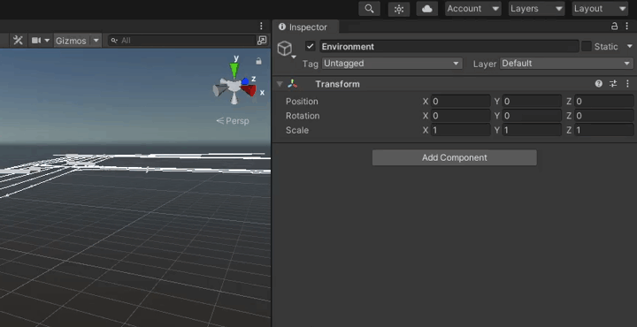
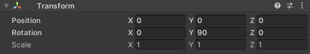

Add a new Environment
Create a lanelet2
- Use VectorMapBuilder and real-world PCD (.pcd) (video - .osm file creation)
Create a prefab
- Guidelines for making 3d models (impact on performance, culling…)
- Add roads, buildings, greenery, signs, road markings… (screens)
- Add Traffic Lights
- Add Traffic Light Script (bulb emission and material configs - screens)
- Add a Directional Light (screen - example, hyperlink to unity)
- Add a Volume (screen - example,, hyperlink to unity)
- Add a Environment Script (MGRS)
- Add NPCPedestrians (guidelines, walker configuration)
- Add a RandomTraffic (hyperlink)
Create a PCD from Mesh
- Reasons for making pcd from mesh instead of using real world pcd.
- Usage requirements (osm file, 3d model (prefab))
- Create a scene with 3D model map of the area (gif)
- Import osm file (gif)
- Add a simple vehicle
- Add a geometry with collider (screen)
- Add a lidar link (screen)
- Add a Lidar Sensor Script (screen)
- Add a RGL Mapping Adapter Script (explanation, leaf size)
- Add a Point Cloud Visualization Script
- Add a Scene Manager (hyperlink)
- Add a Point Cloud Mapper Script (description, osm container, world origin, vehicle, output, interval)
- Mapping (description play->stop->result, example - video)
Create a lanelet2
Create a prefab
Guidelines for making 3d models
Add a Environment Script
Add en Environment Script into an Environment Object which should be a child of your Simulation Object.
-
Click on the 'Add Component' button in the Environment object

-
Search for
Environmentand select it
-
Set the MGRS offset position to the global coordinates in which models are created

-
For the Traffic Lanes to be positioned accurately you also need to set a positive 90 degree rotation over Y axis to an Environment Object

Localization information
In AWSIM all objects are located with their real world coordinates. This way the real world is represented accurately.
When adding some static element to your scene that is a part of the world (like 3D models of buildings, traffic lights etc.) it is a good practice to aggregate them in one parent Object called Map or something similar.
Then you can set a transformation of the parent Object Map to adjust the world position in reference to loaded Traffic Lanes from lanelet.
Add roads, buildings, greenery, signs, road markings…
Important
When adding static elements that belong to a certain map remember to add them to a Map Object as explained here.
For the best possible representation
Add Traffic Lights
Add Traffic Light Script
Add a Directional Light
Add a Volume
Add NPCPedestrians
Add a RandomTraffic
For information about how to add a Random Traffic to a scene please visit this section